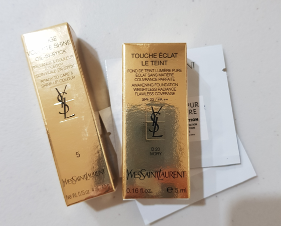

입생 루쥬볼립떼 샤인 5
향연보고 온날 기분이 업되어서 고터 신세계 들러서 립스틱 충동구매
도쿄갈때 산 바비브라운이 그닥 만족스럽지 않고
최근 배송온 타르트 미니사이즈 립페인트 베리 색상이 웹사이트 사진과는 전혀다른 어두운 보라색!!!
안어울려 ;ㅂ;
해서 날 빵끗 웃게 만들 립스틱을 찾아 헤매게 되었는데(....)
입생 쵹쵹이 제품을 한번 구매해 볼까 생각하고 무작정 백화점을 방문했음 :p
입생제품은 예전에 52호 로지코랄이 엄청 유명해졌을때 한번 구매해보고
이것도 그닥 감흥이 없어서 몇번쓰다가 흐지부지 되었던 경험이 있어서 한동안 입생로랑 이란 브랜드에 관심을 두지 않다가
갑자기 왜 꽂혔는지 모르겠다
(어둠속에서 열심히 눈팅하면서 남들이 좋다고 하면 열심히 따라사보는 그런인간 ^^;;;)
12번 46번 테스트를 해봤는데
12번은 내 입술위에서는 티도 안나고 46번은 난 자몽/다홍/오렌지 등등은 내 얼굴에 어울리는 색인건 맞는데
내가 싫음 -_-;; 이유를 모르겠다 ㅋㅋ 무의식중 핑크에 대한 로망이 있나 ㅋㅋㅋ
5번은 마음에 들긴하는데 파우치에 넣어다니는 디올 어딕트 976 이랑 비슷할거 같아서 망설이다
그 외엔 마음에 드는 색이 없어서
에이 모르겠다 비슷한거 또사지뭐 싶어서 집어왔다
일주일 사용해본 소감은
쵹쵹하고 발색잘되고 향도 좋고 만족중
..............하지만 얘도 100%는 아니야 ;ㅂ;
..........다른 브랜드를 도전해 봐야겠습니당
이렇게 또다시 집착이 시작되는중 ^^;;;;